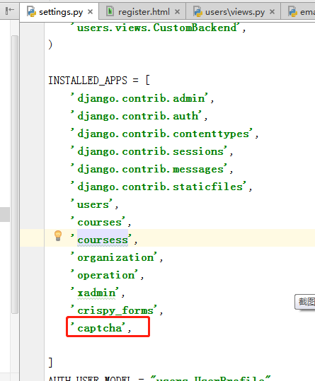
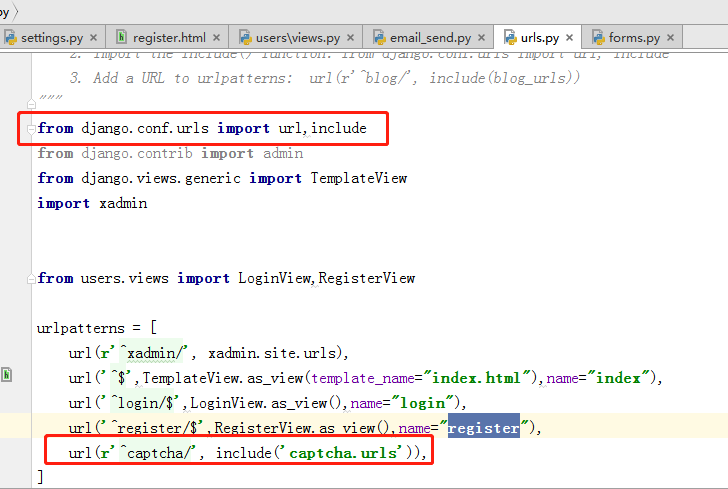
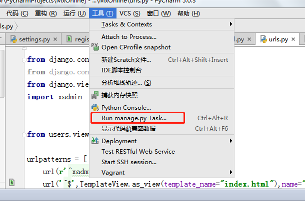
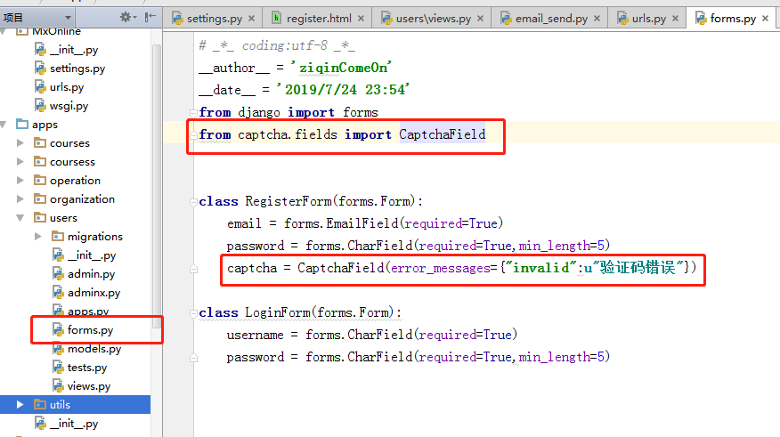
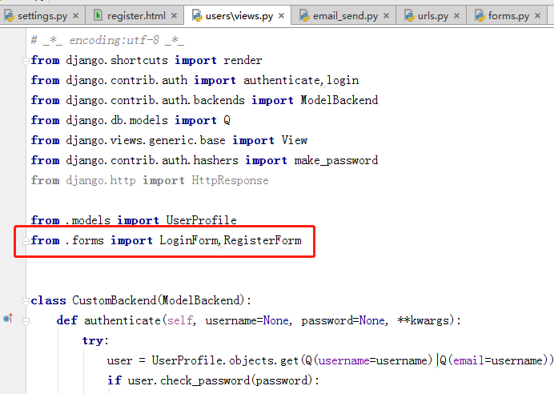
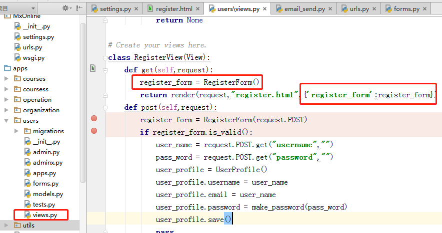
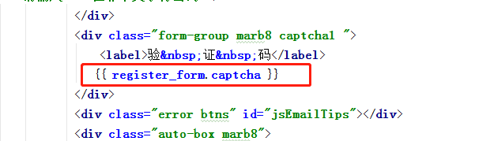
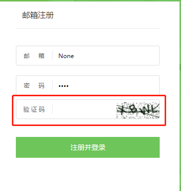

官方文档 https://django-simple-captcha.readthedocs.io/en/latest/usage.html#installation
使用命令安装pip install django-simple-captcha==0.4.6 (==后面是版本号)
安装好之后添加到 settings.py中

把 url(r'^captcha/', include('captcha.urls')),添加到项目的urls.py中，如下图

Run python manage.py migrate 如下图

执行命令
makemigrations
然后再执行
migrate进行数据表迁移
到这里没有报错说明captcha验证码组件已经安装成功并且可以进行如下步骤了：
在users的forms.py里添加到RegisterForm Class里，如下图：（记得from captcha.fields import CaptcahField下）

在users的views里执行如下图红框所示代码：


最后在register.py文件里写入如下代码

最终效果图如下图：
